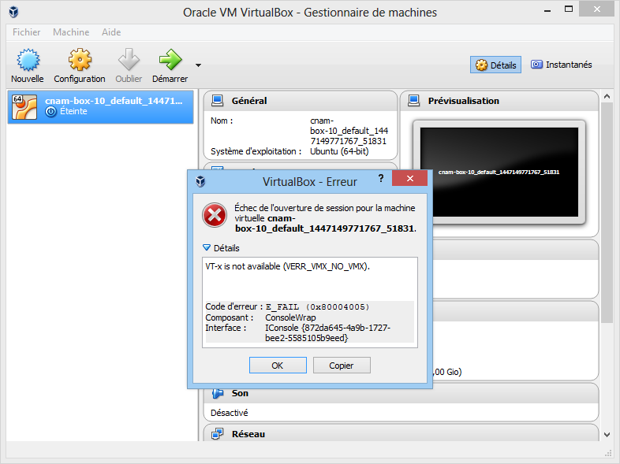
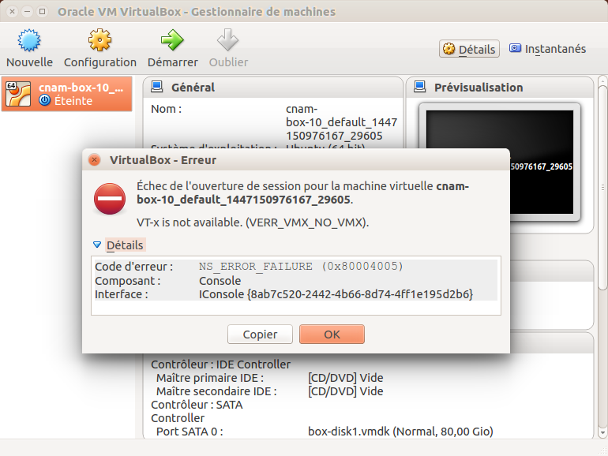
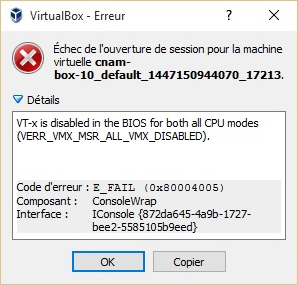

Développement web côté serveur avec PHP
virtualbox + vagrant
Ce chapitre décrit la procédure d’installation d’une vm préconfigurée : une box.
VM = machine virtuelle box = image disque d’une VM
N.B. Les x qui aparaissent dans les noms de fichiers correspondent à des chiffres.
Veillez à utiliser le nom réel des fichiers lorsque vous tapez une commande.
Installation de virtualbox + vagrant pour Windows
- copiez les dossiers
virtualbox,vagrantetputtysur votre ordinateur - lancez
VirtualBox-x.x.x-xxxxxx-Win.exe - lancez
vagrant_x.x.x.msi - lancez
putty-x.xx-installer.exe
Installation de virtualbox + vagrant pour Mac OS
- copiez les dossiers
virtualboxetvagrantsur votre ordinateur - lancez
VirtualBox-x.x.x-xxxxxx-OSX.dmg - lancez
vagrant_x.x.x.dmg
Installation de virtualbox + vagrant pour Linux
- ouvrir un terminal
-
tapez :
sudo apt-get update sudo apt-get install virtualbox sudo apt-get install vagrant
Installation de la vm jdy-box
- copiez l’image de la machine virtuelle
- si votre processeur fonctionne en 64 bit : copiez
2016xxxxxxxxxx-jdy-box-64-php-5.6-x.x.x.boxsur votre bureau - si votre processeur fonctionne en 32 bit ou si vous avez un doute : copiez
2016xxxxxxxxxx-jdy-box-32-php-5.6-x.x.x.boxsur votre bureau
- si votre processeur fonctionne en 64 bit : copiez
- ouvrir un terminal / une ligne de commande
-
listez les vm installées :
vagrant box listsi des vm sont installées, elles apparaîtront comme ceci :
debian/jessie64 (virtualbox, 8.5.0) debian/wheezy64 (virtualbox, 7.11.0) ubuntu/trusty32 (virtualbox, 20161121.0.0) ubuntu/trusty64 (virtualbox, 20161121.0.0) - rendez-vous dans le dossier de votre bureau
-
si vous utilisez Windows en français, tapez :
cd Bureau -
sinon (Windows en anglais, Mac OS, Linux) tapez :
cd Desktop
-
- importez la vm
- si vous utilisez une box 64 bit, tapez :
vagrant box add jdy-box-64-php-5.6 2016xxxxxxxxxx-jdy-box-64-php-5.6-x.x.x.box- si vous utilisez une box 32 bit, tapez :
vagrant box add jdy-box-32-php-5.6 2016xxxxxxxxxx-jdy-box-32-php-5.6-x.x.x.box -
listez de nouveau les vm installées :
vagrant box listun nouvelle vm devrait être visible :
debian/jessie64 (virtualbox, 8.5.0) debian/wheezy64 (virtualbox, 7.11.0) jdy-box-64-php-5.6 (virtualbox, 0) ubuntu/trusty32 (virtualbox, 20161121.0.0) ubuntu/trusty64 (virtualbox, 20161121.0.0)
Créer un nouveau projet web
- créez le dossier des projets web
- si vous utilisez Windows, créez un dossier
wwwà la racine de votre disqueC: - si vous utilisez Mac OS ou Linux, créez un dossier
wwwdans votre home
- si vous utilisez Windows, créez un dossier
- copiez le fichier
jdy-dev-template.zipdans le dossierwww - dans le dossier
wwwcréez un nouveau dossier pour votre projet web :php01.cnam.dev - dézippez le contenu du fichier
jdy-dev-template.zipdans le dossierphp01.cnam.dev -
vous devriez avoir l’arborescence suivante :
www/ L php01.cnam.dev/ L bin/ L cgi-bin/ L data/ L logs/ L provision/ L www/ L jdy-dev-template-version L Vagrantfile32-php-5.6 L Vagrantfile64-php-5.6 - configurer votre vm
- si votre processeur fonctionne en 64 bit, copiez supprimez
Vagrantfile32-php-5.6et renommerVagrantfile64-php-5.6enVagrantfile - si votre processeur fonctionne en 32 bit, copiez supprimez
Vagrantfile64-php-5.6et renommerVagrantfile32-php-5.6enVagrantfile
- si votre processeur fonctionne en 64 bit, copiez supprimez
Démarrer la vm
- ouvrir un terminal / une ligne de commande
- rendez-vous dans le dossier de votre projet web
-
si vous utilisez Windows en et que le chemin de votre dossier web est
C:/www/php01.cnam.dev, tapez :cd C:/www/php01.cnam.dev -
sinon, avec Mac OS ou Linux, tapez :
cd www/php01.cnam.dev
-
-
démarrez la vm :
vagrant up -
attendez que la commande se termine, vous devriez voir un affichage semblable à celui-ci :
Bringing machine 'default' up with 'virtualbox' provider... ==> default: Importing base box 'jdy-box-64-php-5.6'... ==> default: Matching MAC address for NAT networking... ==> default: Setting the name of the VM: php01cnamdev_default_1480442520192_92581 ==> default: Clearing any previously set network interfaces... ==> default: Preparing network interfaces based on configuration... default: Adapter 1: nat default: Adapter 2: hostonly ==> default: Forwarding ports... default: 22 (guest) => 2222 (host) (adapter 1) ==> default: Running 'pre-boot' VM customizations... ==> default: Booting VM... ==> default: Waiting for machine to boot. This may take a few minutes... default: SSH address: 127.0.0.1:2222 default: SSH username: vagrant default: SSH auth method: private key ==> default: Machine booted and ready! ==> default: Checking for guest additions in VM... ==> default: Configuring and enabling network interfaces... ==> default: Mounting shared folders... default: /vagrant => /home/daishi/www/php01.cnam.dev default: /var/www/website => /home/daishi/www/php01.cnam.dev ==> default: Running provisioner: shell... default: Running: /tmp/vagrant-shell20161129-14682-143mbuh.sh ==> default: stdin: is not a tty ==> default: * Restarting web server apache2 ==> default: ...done. - pour vérifier que tout fonctionne, ouvrez votre navigateur web et entrez l’adresse
192.168.33.10 -
si vous obtenez le résultat suivant, c’est que le serveur web fonctionne :
Hello World! - si ça marche, vous pouvez vous féliciter ou commencer à coder dans le dossier
php01.cnam.dev/www/web/ -
et si vous voulez arrêter la vm, tapez :
vagrant halt
Remplacer une vm par une version plus récente
Au moment d’installer la vm avec vagrant box add, il se peut qu’une ancienne version soit déjà présente et vagrant plante avec l’erreur suivante :
$ vagrant box add jdy-box-64-php-5.4 20161128151316-jdy-box-64-php-5.4-3.5.3.box
==> box: Box file was not detected as metadata. Adding it directly...
==> box: Adding box 'jdy-box-64-php-5.4' (v0) for provider:
box: Unpacking necessary files from: file:///home/daishi/Desktop/20161128151316-jdy-box-64-php-5.4-3.5.3.box
The box you're attempting to add already exists. Remove it before
adding it again or add it with the `--force` flag.
Name: jdy-box-64-php-5.4
Provider: virtualbox
Version: 0
Pour régler le problème, vous devez d’abord désinstaller l’ancienne version puis installer la nouvelle.
- copiez l’image de la machine virtuelle
- si votre processeur fonctionne en 64 bit : copiez
2016xxxxxxxxxx-jdy-box-64-php-5.6-x.x.x.boxsur votre bureau - si votre processeur fonctionne en 32 bit ou si vous avez un doute : copiez
2016xxxxxxxxxx-jdy-box-32-php-5.6-x.x.x.boxsur votre bureau
- si votre processeur fonctionne en 64 bit : copiez
- ouvrir un terminal / une ligne de commande
-
listez les vm installées :
vagrant box listla vm
jdy-box-64-php-5.6est déjà installée :debian/jessie64 (virtualbox, 8.5.0) debian/wheezy64 (virtualbox, 7.11.0) jdy-box-64-php-5.6 (virtualbox, 0) ubuntu/trusty32 (virtualbox, 20161121.0.0) ubuntu/trusty64 (virtualbox, 20161121.0.0) - rendez-vous dans le dossier de votre bureau
-
si vous utilisez Windows en français, tapez :
cd Bureau -
sinon (Windows en anglais, Mac OS, Linux) tapez :
cd Desktop
-
- supprimez l’ancienne vm
- si vous utilisez une box 64 bit, tapez :
vagrant box remove jdy-box-64-php-5.6- si vous utilisez une box 32 bit, tapez :
vagrant box remove jdy-box-32-php-5.6 -
listez de nouveau les vm installées :
vagrant box listl’ancienne vm devrait avoir disparu :
debian/jessie64 (virtualbox, 8.5.0) debian/wheezy64 (virtualbox, 7.11.0) ubuntu/trusty32 (virtualbox, 20161121.0.0) ubuntu/trusty64 (virtualbox, 20161121.0.0) - importez la nouvelle vm
- si vous utilisez une box 64 bit, tapez :
vagrant box add jdy-box-64-php-5.6 2016xxxxxxxxxx-jdy-box-64-php-5.6-x.x.x.box- si vous utilisez une box 32 bit, tapez :
vagrant box add jdy-box-32-php-5.6 2016xxxxxxxxxx-jdy-box-32-php-5.6-x.x.x.box -
listez de nouveau les vm installées :
vagrant box listun nouvelle vm devrait être visible :
debian/jessie64 (virtualbox, 8.5.0) debian/wheezy64 (virtualbox, 7.11.0) jdy-box-64-php-5.6 (virtualbox, 0) ubuntu/trusty32 (virtualbox, 20161121.0.0) ubuntu/trusty64 (virtualbox, 20161121.0.0)
Les erreurs
Si vagrant ne démarre pas la vm, lancez virtualbox et démarrez la vm manuellement.
Dans virtualbox la vm devrait porter un nom semblable à php01cnamdev_default_..._....
Le message d’erreur qui s’affiche permet de diagnostiquer le problème.
Erreur : VT-x is not available
virtualbox avec Windows

virtualbox avec Linux

Solution 1 : activer la virtualisation dans le BIOS (VT-x pour Intel et AMD-V pour AMD)
- BIOS : Forum Aux Questions - Aide de Windows
- BIOS - Accéder au setup du Bios
- How to Enable Intel Virtualization Technology (vt-x) and amd-v in BIOS - Updated
Si aucune option VT-x ou AMD-V n’est disponible dans le BIOS, c’est que le PC ne gère pas la virtualisation.
Solution 2 : utiliser une vm 32 bit
- suivez la procédure d’installation de la vm 32 bit
Erreur : VT-x is disabled
virtualbox avec Windows

Solution : activer la virtualisation dans le BIOS (VT-x pour Intel et AMD-V pour AMD)